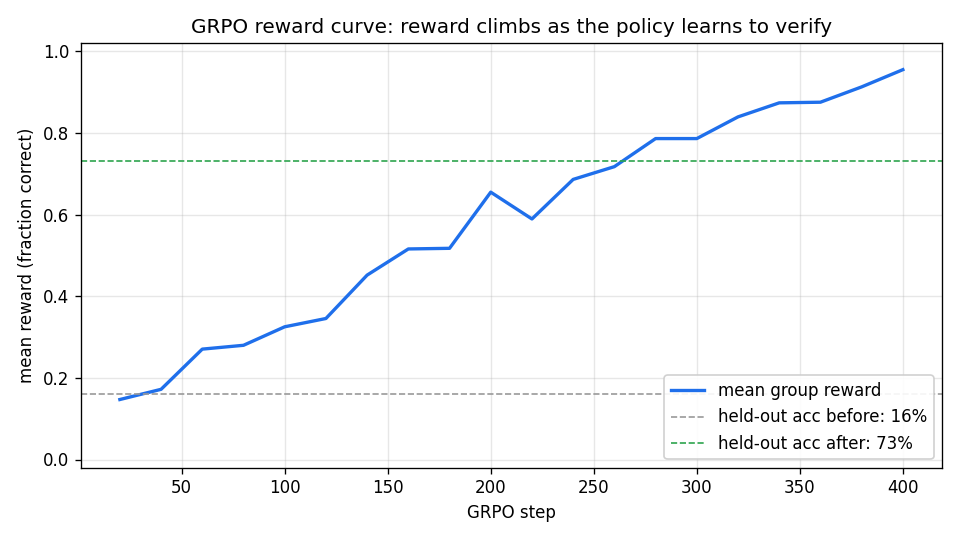

<!-- .slide: id="title" class="section-divider" data-state="is-section-divider" --> # LLMs 0 to 100 Module 7: Reinforcement Learning Post-Training --- <!-- .slide: id="review-sft" --> ## Review: Where Module 6 Left Us SFT turned the base model into an **instruct model**: it treats a prompt as a request. <div class="slide-columns" style="grid-template-columns: repeat(2, 1fr); gap: 34px;"> <div> **What SFT gave us** - Imitates good demonstrations - Same machinery as pretraining: cross-entropy on fixed target tokens </div> <div> **Three limits SFT cannot fix** - Can only **imitate** demonstrations, never exceed them - No way to use **negative** signal ("this answer is worse") - **Exposure bias**: trained on ground-truth prefixes, generates from its own outputs </div> </div> This module fixes all three by changing the **training signal**, not the machinery. <!-- .element: class="text-lg" style="margin-top: 12px;" --> --- <!-- .slide: id="review-machinery" --> ## Review: The Machinery Does Not Change <div class="slide-columns" style="grid-template-columns: repeat(2, 1fr); gap: 34px;"> <div> **Same as Modules 2, 5, 6** - Forward pass through the transformer (Module 4) - **Backpropagation** and **AdamW** (Module 2) - Gradient clipping, batching, learning-rate control </div> <div> **New in RL** - No fixed correct token at each position - Signal: a **scalar reward** on the model's **own samples** - Objective: **expected reward**, not cross-entropy to a label </div> </div> --- <!-- .slide: id="divider-what-is-rl" class="section-divider" data-state="is-section-divider" --> # What Reinforcement Learning Is, Really --- <!-- .slide: id="rl-vocabulary" --> ## The Classical RL Loop An **agent** interacts with an **environment** in a loop. <div class="rl-loop-figure"> <svg viewBox="0 0 880 220" xmlns="http://www.w3.org/2000/svg" role="img" aria-label="Agent-environment interaction loop"> <defs> <marker id="rl-ah" markerWidth="10" markerHeight="8" refX="7.5" refY="3" orient="auto"><path d="M0,0 L8,3 L0,6 Z" fill="#8892a4"></path></marker> </defs> <rect x="70" y="64" width="250" height="92" rx="14" fill="#4a9eff" fill-opacity="0.12" stroke="#4a9eff" stroke-width="2"></rect> <text x="195" y="103" text-anchor="middle" fill="#e8eaf0" font-size="26" font-weight="700">Agent</text> <text x="195" y="133" text-anchor="middle" fill="#8892a4" font-size="17">policy π(a | s)</text> <rect x="560" y="64" width="250" height="92" rx="14" fill="#f5a623" fill-opacity="0.12" stroke="#f5a623" stroke-width="2"></rect> <text x="685" y="103" text-anchor="middle" fill="#e8eaf0" font-size="26" font-weight="700">Environment</text> <text x="685" y="133" text-anchor="middle" fill="#8892a4" font-size="17">world / verifier</text> <path d="M320,96 L552,96" fill="none" stroke="#8892a4" stroke-width="2.5" marker-end="url(#rl-ah)"></path> <text x="436" y="82" text-anchor="middle" fill="#4a9eff" font-size="19" font-weight="600">action a</text> <path d="M560,128 L328,128" fill="none" stroke="#8892a4" stroke-width="2.5" marker-end="url(#rl-ah)"></path> <text x="436" y="152" text-anchor="middle" fill="#f5a623" font-size="19" font-weight="600">reward r + next state s</text> </svg> </div> <div class="slide-columns" style="grid-template-columns: repeat(2, 1fr); gap: 34px;"> <div> - **State** $s$: what the agent observes - **Action** $a$: what the agent does - **Reward** $r$: a scalar score for the outcome - **Policy** $\pi(a \mid s)$: the rule mapping states to actions </div> <div> - **Trajectory** (episode): a full sequence $s_0, a_0, s_1, a_1, \dots$ - **Return**: total reward over an episode - Goal: **maximize expected return** </div> </div> No labeled "correct action." The agent learns only from the **reward** its own choices earn. <!-- .element: class="text-lg" style="margin-top: 12px;" --> --- <!-- .slide: id="rl-as-llm" --> ## Mapping RL Onto a Language Model <div class="slide-columns" style="grid-template-columns: repeat(2, 1fr); gap: 30px;"> <div> **Classical RL** - Policy - State - Action - Episode - Reward </div> <div> **Language model** - The **model** itself, $\pi_\theta$ - The **prompt + tokens so far** - Emitting the **next token** - One full **completion** - A scalar **score on the finished output** </div> </div> The policy *is* the model. Training the policy *is* updating the weights. <!-- .element: class="text-lg" style="margin-top: 12px;" --> --- <!-- .slide: id="credit-assignment" --> ## The Defining Difference: Credit Assignment <div class="slide-columns" style="grid-template-columns: repeat(2, 1fr); gap: 34px;"> <div> **Supervised finetuning (Module 6)** - Every position has a **known correct token** - Minimize cross-entropy against it - Dense, local signal </div> <div> **Reinforcement learning** - **No correct token** - One scalar reward on the **whole** output - One number must become a per-token gradient </div> </div> Turning one end-of-sequence reward into an update for every token is the **credit-assignment problem**: the central challenge of this module. <!-- .element: class="text-lg" style="margin-top: 12px;" --> --- <!-- .slide: id="bandit-vs-mdp" --> ## The Resolution: Collapse to a Bandit Classical RL is a multi-step **Markov decision process (MDP)**: every action lands in a new state and earns its own reward. LLM post-training **collapses this to a one-step contextual bandit**: <div class="slide-columns" style="grid-template-columns: repeat(2, 1fr); gap: 34px;"> <div> - The whole completion is a **single action** - **One terminal reward** at the end - **No** intermediate rewards; discount factor effectively **1** </div> <div> - This is why GRPO assigns **one advantage** to the sequence and broadcasts it to **every token** - Multi-step RL returns later: **process rewards** and **agentic RL** </div> </div> The credit-assignment problem is sidestepped: no per-token credit at all. <!-- .element: class="text-lg" style="margin-top: 12px;" --> --- <!-- .slide: id="figure-sutton-barto" --> <div class="figure-card">  <div class="figure-info"> ## Richard Sutton and Andrew Barto <!-- .element: class="fragment fade-in" --> <div class="fragment fade-in"> ### Reinforcement Learning: An Introduction (1998, 2018); 2024 Turing Award - Wrote the foundational textbook that defined modern RL vocabulary - Sutton's **"The Bitter Lesson"**: general methods that scale with **search and learning** beat hand-engineered knowledge - RL post-training is that lesson applied to language models </div> </div> </div> --- <!-- .slide: id="policy-gradient" --> ## Policy Gradient: REINFORCE The objective: the policy's **expected reward** over its own samples. $$J(\theta) = \mathbb{E}_{y \sim \textcolor{#4a9eff}{\pi_\theta(\cdot \mid x)}}\big[ \textcolor{#f5a623}{R(x, y)} \big]$$ - One sampled completion earns an **actual reward** $R(x,y)$ - Training changes a **distribution**, so we optimize the **average** reward over its possible samples With a baseline $b$, the REINFORCE estimator: $$\nabla_\theta J(\theta) = \mathbb{E}_{y \sim \pi_\theta}\big[ \textcolor{#50c878}{(R(x,y) - b)} \nabla_\theta \log \textcolor{#4a9eff}{\pi_\theta(y \mid x)} \big]$$ <div class="slide-columns" style="grid-template-columns: repeat(2, 1fr); gap: 34px;"> <div> - $\textcolor{#50c878}{R(x,y) - b}$ is the **advantage**: better or worse than expected - $\nabla_\theta \log \textcolor{#4a9eff}{\pi_\theta(y)}$: the direction that makes $y$ more likely - Positive advantage pushes probability **up**; negative pushes it **down** </div> <div> - The baseline reduces variance **without adding bias** - PPO learns $b$ with a value network; GRPO uses the group mean - Same gradient machinery as Module 2g, now doing ascent on reward </div> </div> --- <section id="reinforce-anim"> <div class="video-container"> <video class="manim-stepper" data-manim-scene="reinforce" preload="auto"></video> </div> </section> --- <!-- .slide: id="figure-williams" --> <div class="figure-card">  <div class="figure-info"> ## Ronald J. Williams <!-- .element: class="fragment fade-in" --> <div class="fragment fade-in"> ### Simple Statistical Gradient-Following Algorithms for Connectionist Reinforcement Learning (REINFORCE, 1992) - Introduced the **policy-gradient** estimator used by every method here - The score-function trick: differentiate $\log \pi_\theta$, weight by reward - Thirty years later it is the engine of RLHF, GRPO, and reasoning models </div> </div> </div> --- <!-- .slide: id="two-axes" --> ## Two Axes, Often Conflated Every method in this module sits on **two orthogonal axes**: <div class="slide-columns" style="grid-template-columns: repeat(2, 1fr); gap: 34px;"> <div> **Online vs offline** — *where does the data come from?* - **Online**: generate fresh data during training (sample, score, update, repeat) - **Offline**: learn from a **fixed dataset** collected ahead of time, like SFT </div> <div> **On-policy vs off-policy** — *who produced the data?* - **On-policy**: the **current** policy (or one negligibly different) - **Off-policy**: a **different or older** policy; the update must correct for the mismatch </div> </div> --- <!-- .slide: id="two-axes-grid" --> ## The Two Axes as a Grid <div class="axes-grid"> <table> <thead> <tr><th></th><th>On-policy</th><th>Off-policy</th></tr> </thead> <tbody> <tr> <th>Online</th> <td><strong>REINFORCE, PPO, GRPO</strong><br/>sample from the live policy, score, update</td> <td>PPO with stale batches<br/>(importance-ratio clipping)</td> </tr> <tr> <th>Offline</th> <td>rare in practice</td> <td><strong>DPO</strong> and SFT<br/>a fixed, pre-collected dataset</td> </tr> </tbody> </table> </div> The common cases **pair up**. PPO's importance-ratio clipping exists to reuse each batch for a few steps **without drifting off-policy**. <!-- .element: class="text-lg" style="margin-top: 14px;" --> --- <!-- .slide: id="why-axes-matter" --> ## Why The Axes Matter <div class="slide-columns" style="grid-template-columns: repeat(2, 1fr); gap: 34px;"> <div> **Online + on-policy** - Explores **beyond** any fixed dataset - Can **exceed the demonstrations** and discover reasoning strategies - Cost: the data distribution **moves** as the model changes; less stable, harder to debug </div> <div> **Offline + off-policy** - **Cheaper and more stable**: reuses the SFT machinery exactly - Cost: can only **rank the responses already in its data** - No exploration, no exceeding the dataset </div> </div> --- <!-- .slide: id="exploration-exploitation" --> ## Exploration vs Exploitation The oldest tension in RL: try **varied** outputs to discover high-reward ones (explore), or lean on **what already works** (exploit). <div class="slide-columns" style="grid-template-columns: repeat(2, 1fr); gap: 34px;"> <div> - In LLM RL, exploration happens through **sampling** - The decoding knobs from Module 4f (**temperature, top-k, top-p**) are now **training hyperparameters** </div> <div> - Too little exploration: the policy never finds better answers - Too much: the gradient is pure noise - The sampling distribution **is** the search strategy </div> </div> --- <!-- .slide: id="entropy-collapse" --> ## The Failure Mode: Entropy Collapse Training sharpens the policy toward a few high-reward outputs, so the distribution's **entropy falls**. <div class="rl-loop-figure"> <svg viewBox="0 0 960 120" xmlns="http://www.w3.org/2000/svg" role="img" aria-label="Entropy collapse chain"> <defs> <marker id="ec-ah" markerWidth="10" markerHeight="8" refX="7.5" refY="3" orient="auto"><path d="M0,0 L8,3 L0,6 Z" fill="#8892a4"></path></marker> </defs> <rect x="10" y="30" width="200" height="60" rx="12" fill="#f5a623" fill-opacity="0.12" stroke="#f5a623" stroke-width="1.8"></rect> <text x="110" y="66" text-anchor="middle" fill="#e8eaf0" font-size="17" font-weight="600">diversity dries up</text> <path d="M212,60 L248,60" fill="none" stroke="#8892a4" stroke-width="2.2" marker-end="url(#ec-ah)"></path> <rect x="254" y="30" width="200" height="60" rx="12" fill="#f5a623" fill-opacity="0.12" stroke="#f5a623" stroke-width="1.8"></rect> <text x="354" y="66" text-anchor="middle" fill="#e8eaf0" font-size="17" font-weight="600">exploration stops</text> <path d="M456,60 L492,60" fill="none" stroke="#8892a4" stroke-width="2.2" marker-end="url(#ec-ah)"></path> <rect x="498" y="30" width="200" height="60" rx="12" fill="#f5a623" fill-opacity="0.12" stroke="#f5a623" stroke-width="1.8"></rect> <text x="598" y="66" text-anchor="middle" fill="#e8eaf0" font-size="17" font-weight="600">narrow behavior</text> <path d="M700,60 L736,60" fill="none" stroke="#8892a4" stroke-width="2.2" marker-end="url(#ec-ah)"></path> <rect x="742" y="30" width="200" height="60" rx="12" fill="#ff6b6b" fill-opacity="0.14" stroke="#ff6b6b" stroke-width="2"></rect> <text x="842" y="66" text-anchor="middle" fill="#e8eaf0" font-size="17" font-weight="600">learning stalls</text> </svg> </div> **Countermeasures** - An **entropy bonus** in the objective, rewarding spread - The **KL-to-reference leash** used by RLHF, keeping the policy near the broad base distribution Entropy collapse returns when we reach reasoning models, behind a surprising result. <!-- .element: class="text-lg" style="margin-top: 12px;" --> --- <!-- .slide: id="divider-why-rl" class="section-divider" data-state="is-section-divider" --> # Why RL for LLMs --- <!-- .slide: id="resolve-three-limits" --> ## Resolving the Three Limits of SFT RL optimizes an **outcome** instead of copying a target: <div class="slide-columns" style="grid-template-columns: repeat(3, 1fr); gap: 22px;"> <div> **Exceed demonstrations** A reward can select answers **better** than anything in the data. </div> <div> **Use negative signal** Reward **ranks** better against worse, pushing probability **away** from bad answers. </div> <div> **Close exposure bias** The model trains on its **own generations**: the same distribution it faces at inference. </div> </div> --- <!-- .slide: id="eval-easier-than-gen" --> ## Evaluation Is Easier Than Generation We often **cannot write the ideal target token**, but we **can judge** an output after the fact. <div class="slide-columns" style="grid-template-columns: repeat(2, 1fr); gap: 34px;"> <div> - Writing a perfect essay is hard; **recognizing** one is easier - Producing a correct proof is hard; **checking** it is easier </div> <div> - A **reward** is easier to specify than a full **demonstration** - This is why RL can reach behaviors SFT cannot </div> </div> --- <!-- .slide: id="reward-spectrum" --> ## Where Does the Reward Come From? <div class="slide-columns" style="grid-template-columns: repeat(2, 1fr); gap: 30px;"> <div> - **Human preference comparisons**: RLHF - **A learned reward model** imitating those preferences - **A strong LLM scoring outputs directly**: LLM-as-judge, the dominant reward for tasks no program can check </div> <div> - **An AI judge guided by written principles**: RLAIF - **A programmatic verifier** for checkable answers: RLVR </div> </div> The harder the answer is to check by program, the more the reward leans on **judgment**, and the more it can be gamed. <!-- .element: class="text-lg" style="margin-top: 12px;" --> --- <!-- .slide: id="rejection-sampling" --> ## The Gentlest RL: Rejection Sampling Also called **Best-of-N**: <div class="slide-columns" style="grid-template-columns: repeat(2, 1fr); gap: 34px;"> <div> **The loop** 1. Sample $N$ completions 2. Score them with the reward 3. Keep only the **best** (or those above a threshold) 4. Finetune on those with ordinary **cross-entropy** </div> <div> **Why teach it first** - No policy gradient, no critic - **Offline** and **off-policy** - The core RL move, made concrete: **reward selects among the model's own samples** - Inference-time Best-of-N needs a **scorer**: verifier, reward model, LLM judge, or task metric </div> </div> Limitation: rejected samples provide no gradient. Policy gradient can push **down** on losers as well as up on winners. <!-- .element: class="text-lg" style="margin-top: 12px;" --> --- <!-- .slide: id="reward-cheaper-supervision" --> ## Reward Is Sparser but Cheaper Supervision <div class="slide-columns" style="grid-template-columns: repeat(2, 1fr); gap: 34px;"> <div> **Demonstrations** - **Dense**: a target token at every position - A human writes each ideal response, so the data is expensive and finite </div> <div> **Reward** - **Sparse**: one scalar for a whole sequence, which is why credit assignment is hard - Pairwise comparisons are **cheaper** to collect, and one reward grades **many** sampled outputs </div> </div> RL trades supervision density for supervision cost. Sampling is the **engine**: decoding is now part of the **training loop**, and exploration depends on sampling diversity. <!-- .element: class="text-lg" style="margin-top: 12px;" --> --- <!-- .slide: id="divider-rlhf" class="section-divider" data-state="is-section-divider" --> # RLHF and the Reward Model The recipe that produced ChatGPT --- <!-- .slide: id="rlhf-completes-instructgpt" --> ## Completing the InstructGPT Recipe Module 6 covered **stage 1**. Stages 2 and 3 turned a base model into ChatGPT. <div class="slide-columns" style="grid-template-columns: repeat(3, 1fr); gap: 22px;"> <div> **1. SFT** ✓ Finetune on human demonstrations. **Module 6.** </div> <div> **2. Reward model** Train a model to predict human **preferences**. This section. </div> <div> **3. RL (PPO)** Optimize the policy against the reward model. This section. </div> </div> Origins: **Christiano et al. (2017)** trained agents from human preferences; **Stiennon et al. (2020)** applied it to summarization; **Ouyang et al. (2022, InstructGPT)** made it the standard recipe. <!-- .element: class="text-lg" style="margin-top: 12px;" --> --- <!-- .slide: id="rlhf-pipeline" --> ## The Three-Stage Recipe <div class="rlhf-flow"> <svg viewBox="0 0 960 500" xmlns="http://www.w3.org/2000/svg" role="img" aria-label="The three stages of RLHF: supervised finetuning, reward model, and PPO optimization"> <defs> <marker id="rh-ah" markerWidth="10" markerHeight="8" refX="7.5" refY="3" orient="auto"><path d="M0,0 L8,3 L0,6 Z" fill="#8892a4"></path></marker> <marker id="rh-rm" markerWidth="10" markerHeight="8" refX="7.5" refY="3" orient="auto"><path d="M0,0 L8,3 L0,6 Z" fill="#f5a623"></path></marker> </defs> <rect x="8" y="6" width="944" height="130" rx="16" fill="#4a9eff" fill-opacity="0.04" stroke="#2a3450" stroke-width="1.4"></rect> <text x="28" y="34" fill="#f5a623" font-size="19" font-weight="700">Stage 1 · Supervised finetuning (SFT)</text> <rect x="30" y="50" width="198" height="66" rx="12" fill="#4a9eff" fill-opacity="0.12" stroke="#4a9eff" stroke-width="1.8"></rect> <text x="129" y="79" text-anchor="middle" fill="#e8eaf0" font-size="16" font-weight="600">Prompts</text> <text x="129" y="100" text-anchor="middle" fill="#8892a4" font-size="12">real user requests</text> <path d="M232,83 L258,83" fill="none" stroke="#8892a4" stroke-width="2.2" marker-end="url(#rh-ah)"></path> <rect x="264" y="50" width="198" height="66" rx="12" fill="#4a9eff" fill-opacity="0.12" stroke="#4a9eff" stroke-width="1.8"></rect> <text x="363" y="79" text-anchor="middle" fill="#e8eaf0" font-size="16" font-weight="600">Human demos</text> <text x="363" y="100" text-anchor="middle" fill="#8892a4" font-size="12">labelers write answers</text> <path d="M466,83 L492,83" fill="none" stroke="#8892a4" stroke-width="2.2" marker-end="url(#rh-ah)"></path> <rect x="498" y="50" width="198" height="66" rx="12" fill="#4a9eff" fill-opacity="0.12" stroke="#4a9eff" stroke-width="1.8"></rect> <text x="597" y="79" text-anchor="middle" fill="#e8eaf0" font-size="16" font-weight="600">Finetune base LM</text> <text x="597" y="100" text-anchor="middle" fill="#8892a4" font-size="12">supervised learning</text> <path d="M700,83 L726,83" fill="none" stroke="#8892a4" stroke-width="2.2" marker-end="url(#rh-ah)"></path> <rect x="732" y="50" width="198" height="66" rx="12" fill="#f5a623" fill-opacity="0.14" stroke="#f5a623" stroke-width="2"></rect> <text x="831" y="79" text-anchor="middle" fill="#e8eaf0" font-size="16" font-weight="600">SFT model</text> <text x="831" y="100" text-anchor="middle" fill="#8892a4" font-size="12">the initial policy</text> <path d="M480,138 L480,166" fill="none" stroke="#8892a4" stroke-width="2.2" marker-end="url(#rh-ah)"></path> <text x="496" y="157" fill="#8892a4" font-size="12.5" font-style="italic">SFT model seeds the RL policy</text> <rect x="8" y="170" width="944" height="130" rx="16" fill="#4a9eff" fill-opacity="0.04" stroke="#2a3450" stroke-width="1.4"></rect> <text x="28" y="198" fill="#f5a623" font-size="19" font-weight="700">Stage 2 · Reward model (RM)</text> <rect x="30" y="214" width="198" height="66" rx="12" fill="#4a9eff" fill-opacity="0.12" stroke="#4a9eff" stroke-width="1.8"></rect> <text x="129" y="243" text-anchor="middle" fill="#e8eaf0" font-size="16" font-weight="600">Sample responses</text> <text x="129" y="264" text-anchor="middle" fill="#8892a4" font-size="12">k answers per prompt</text> <path d="M232,247 L258,247" fill="none" stroke="#8892a4" stroke-width="2.2" marker-end="url(#rh-ah)"></path> <rect x="264" y="214" width="198" height="66" rx="12" fill="#4a9eff" fill-opacity="0.12" stroke="#4a9eff" stroke-width="1.8"></rect> <text x="363" y="243" text-anchor="middle" fill="#e8eaf0" font-size="16" font-weight="600">Humans rank them</text> <text x="363" y="264" text-anchor="middle" fill="#8892a4" font-size="12">e.g. A > B > C</text> <path d="M466,247 L492,247" fill="none" stroke="#8892a4" stroke-width="2.2" marker-end="url(#rh-ah)"></path> <rect x="498" y="214" width="198" height="66" rx="12" fill="#4a9eff" fill-opacity="0.12" stroke="#4a9eff" stroke-width="1.8"></rect> <text x="597" y="243" text-anchor="middle" fill="#e8eaf0" font-size="16" font-weight="600">Train reward model</text> <text x="597" y="264" text-anchor="middle" fill="#8892a4" font-size="12">Bradley-Terry loss</text> <path d="M700,247 L726,247" fill="none" stroke="#8892a4" stroke-width="2.2" marker-end="url(#rh-ah)"></path> <rect x="732" y="214" width="198" height="66" rx="12" fill="#f5a623" fill-opacity="0.14" stroke="#f5a623" stroke-width="2"></rect> <text x="831" y="243" text-anchor="middle" fill="#e8eaf0" font-size="16" font-weight="600">Reward model</text> <text x="831" y="264" text-anchor="middle" fill="#8892a4" font-size="12">one scalar score</text> <path d="M831,280 L831,307 L597,307 L597,376" fill="none" stroke="#f5a623" stroke-width="2" stroke-dasharray="6 4" marker-end="url(#rh-rm)"></path> <text x="714" y="322" text-anchor="middle" fill="#f5a623" font-size="12" font-style="italic">reward model scores the answer</text> <rect x="8" y="334" width="944" height="158" rx="16" fill="#4a9eff" fill-opacity="0.04" stroke="#2a3450" stroke-width="1.4"></rect> <text x="28" y="362" fill="#f5a623" font-size="19" font-weight="700">Stage 3 · RL optimization (PPO)</text> <rect x="30" y="378" width="198" height="66" rx="12" fill="#4a9eff" fill-opacity="0.12" stroke="#4a9eff" stroke-width="1.8"></rect> <text x="129" y="407" text-anchor="middle" fill="#e8eaf0" font-size="16" font-weight="600">New prompt</text> <text x="129" y="428" text-anchor="middle" fill="#8892a4" font-size="12">sample a task</text> <path d="M232,411 L258,411" fill="none" stroke="#8892a4" stroke-width="2.2" marker-end="url(#rh-ah)"></path> <rect x="264" y="378" width="198" height="66" rx="12" fill="#4a9eff" fill-opacity="0.12" stroke="#4a9eff" stroke-width="1.8"></rect> <text x="363" y="407" text-anchor="middle" fill="#e8eaf0" font-size="16" font-weight="600">Policy responds</text> <text x="363" y="428" text-anchor="middle" fill="#8892a4" font-size="12">generate an answer</text> <path d="M466,411 L492,411" fill="none" stroke="#8892a4" stroke-width="2.2" marker-end="url(#rh-ah)"></path> <rect x="498" y="378" width="198" height="66" rx="12" fill="#4a9eff" fill-opacity="0.12" stroke="#4a9eff" stroke-width="1.8"></rect> <text x="597" y="407" text-anchor="middle" fill="#e8eaf0" font-size="16" font-weight="600">Score answer</text> <text x="597" y="428" text-anchor="middle" fill="#8892a4" font-size="12">reward − β·KL to ref</text> <path d="M700,411 L726,411" fill="none" stroke="#8892a4" stroke-width="2.2" marker-end="url(#rh-ah)"></path> <rect x="732" y="378" width="198" height="66" rx="12" fill="#f5a623" fill-opacity="0.14" stroke="#f5a623" stroke-width="2"></rect> <text x="831" y="407" text-anchor="middle" fill="#e8eaf0" font-size="16" font-weight="600">PPO update</text> <text x="831" y="428" text-anchor="middle" fill="#8892a4" font-size="12">improve the policy</text> <path d="M831,446 C831,483 470,483 363,470 L363,446" fill="none" stroke="#8892a4" stroke-width="2.2" marker-end="url(#rh-ah)"></path> <text x="640" y="465" text-anchor="middle" fill="#8892a4" font-size="12.5" font-style="italic">repeat: the improved policy generates again</text> </svg> </div> Demonstrations teach the format, human comparisons train a reward model, and PPO optimizes the policy against that learned reward. <!-- .element: class="text-lg" style="margin-top: 6px;" --> --- <!-- .slide: id="figure-christiano" --> <div class="figure-card">  <div class="figure-info"> ## Paul Christiano and collaborators <!-- .element: class="fragment fade-in" --> <div class="fragment fade-in"> ### Deep Reinforcement Learning from Human Preferences (2017) - Showed an agent could learn from **human comparisons** of trajectories, with no hand-coded reward - A human picks which of two behaviors looks better; a reward model learns to predict the choice - The origin of the reward-model recipe that RLHF scaled to language </div> </div> </div> --- <!-- .slide: id="reward-model" --> ## Stage 2: The Reward Model Humans rank two responses to the same prompt. A model learns to predict the preferred one. The **Bradley-Terry** loss turns pairwise preferences into a scalar reward: $$\mathcal L_{\text{RM}} = -\mathbb E_{(x, y_w, y_l)}\big[\log \sigma\big(\textcolor{#50c878}{r_\phi}(x, \textcolor{#4a9eff}{y_w}) - \textcolor{#50c878}{r_\phi}(x, \textcolor{#f5a623}{y_l})\big)\big]$$ <div class="slide-columns" style="grid-template-columns: repeat(2, 1fr); gap: 34px;"> <div> - $\textcolor{#4a9eff}{y_w}$: the preferred (winning) response - $\textcolor{#f5a623}{y_l}$: the rejected (losing) response </div> <div> - $\textcolor{#50c878}{r_\phi}$: the learned reward model - The loss rises when the winner scores below the loser </div> </div> The reward model is a **learned, imperfect proxy** for human judgment. <!-- .element: class="text-lg" style="margin-top: 12px;" --> --- <!-- .slide: id="rlhf-objective" --> ## Stage 3: Optimize the Policy PPO maximizes the learned reward. A **KL penalty** to the frozen SFT reference blocks drift into degenerate text that games it. $$\max_{\textcolor{#4a9eff}{\pi_\theta}} \textcolor{#f5a623}{\mathbb E_{y \sim \pi_\theta}\big[ r_\phi(x, y) \big]} - \textcolor{#50c878}{\beta \mathrm{KL}\big(\pi_\theta(\cdot \mid x) \| \pi_{\text{ref}}(\cdot \mid x)\big)}$$ <div class="slide-columns" style="grid-template-columns: repeat(2, 1fr); gap: 34px;"> <div> - First term: $\textcolor{#f5a623}{\mathbb E[r_\phi]}$ means **maximize reward** - Second term: $\textcolor{#50c878}{\mathrm{KL}}$ means **stay close** to the reference policy </div> <div> - $\textcolor{#50c878}{\beta}$: how hard to pull back toward the reference - Without the KL leash, the policy finds gibberish the proxy loves </div> </div> --- <!-- .slide: id="ppo-conceptually" --> ## PPO, Conceptually PPO is the algorithm behind the original RLHF recipe. <div class="slide-columns" style="grid-template-columns: repeat(2, 1fr); gap: 34px;"> <div> - **Actor-critic**: a separate **value network** (critic) estimates expected reward as the baseline - **Clipped surrogate objective**: limits how far the policy moves per update (the off-policy leash again) </div> <div> - **Generalized advantage estimation (GAE)**: a smoothed advantage estimate - The takeaway is the **shape** of the objective, not the clipping algebra </div> </div> This recipe is how a **1.3B** InstructGPT model beat **175B** GPT-3 in human preference (Module 6). <!-- .element: class="text-lg" style="margin-top: 12px;" --> --- <section id="ppo-anim"> <div class="video-container"> <video class="manim-stepper" data-manim-scene="ppo" preload="auto"></video> </div> </section> --- <!-- .slide: id="figure-ouyang-7" --> <div class="figure-card">  <div class="figure-info"> ## Long Ouyang and the InstructGPT team (OpenAI) <!-- .element: class="fragment fade-in" --> <div class="fragment fade-in"> ### Training Language Models to Follow Instructions with Human Feedback (2022) - Made **SFT + reward model + PPO** the standard LLM post-training recipe - We met them in Module 6 for stage 1; they own all three - The direct technical ancestor of ChatGPT </div> </div> </div> --- <!-- .slide: id="side-quest-kl-leash" --> ## Side Quest: The KL Penalty as a Leash Run the same RLHF objective **with** and **without** the KL term. <div class="slide-columns" style="grid-template-columns: repeat(2, 1fr); gap: 34px;"> <div> **With the leash** The policy improves reward while its text stays fluent and on-distribution. </div> <div> **Without it** The policy drifts into **high-reward gibberish**: repetitive, malformed text the reward model scores highly. Over-optimization, demonstrated. </div> </div> The exercise extra credit reproduces this: set $\beta = 0$. <!-- .element: class="text-lg" style="margin-top: 12px;" --> --- <!-- .slide: id="divider-dpo" class="section-divider" data-state="is-section-divider" --> # Direct Preference Optimization Skipping the RL loop --- <!-- .slide: id="dpo-insight" --> ## The DPO Insight Rafailov et al. (2023): the KL-regularized RL objective from RLHF has a **closed-form optimal policy**. <div class="slide-columns" style="grid-template-columns: repeat(2, 1fr); gap: 34px;"> <div> - Rearranged, the **reward becomes implicit** in the policy's own log-probabilities relative to the reference </div> <div> - So: no separate **reward model**, no **RL loop** </div> </div> The reward model and the policy were two views of the same thing. DPO optimizes the policy **directly** from preferences. <!-- .element: class="text-lg" style="margin-top: 12px;" --> --- <!-- .slide: id="dpo-loss" --> ## The DPO Loss One **supervised classification loss** on chosen-vs-rejected pairs, against a frozen reference: $$\mathcal L_{\text{DPO}} = -\mathbb E_{(x, y_w, y_l)}\Big[\log \sigma\Big(\textcolor{#4a9eff}{\beta \log \tfrac{\pi_\theta(y_w \mid x)}{\pi_{\text{ref}}(y_w \mid x)}} - \textcolor{#f5a623}{\beta \log \tfrac{\pi_\theta(y_l \mid x)}{\pi_{\text{ref}}(y_l \mid x)}}\Big)\Big]$$ <div class="slide-columns" style="grid-template-columns: repeat(2, 1fr); gap: 34px;"> <div> - Raise the policy's probability of the **winner** $\textcolor{#4a9eff}{y_w}$ relative to the reference - Lower it for the **loser** $\textcolor{#f5a623}{y_l}$ </div> <div> - $\beta$ controls how far the policy may move from the reference - No sampling, no reward model, no PPO — just **SFT-style** gradient descent </div> </div> --- <section id="dpo-anim"> <div class="video-container"> <video class="manim-stepper" data-manim-scene="dpo" preload="auto"></video> </div> </section> --- <!-- .slide: id="dpo-why-matters" --> ## Why DPO Mattered <div class="slide-columns" style="grid-template-columns: repeat(2, 1fr); gap: 34px;"> <div> **What it removed** - No sampling loop - No reward model - No PPO instability - Runs on the **same machinery as SFT** </div> <div> **The impact** - Preference tuning became **reproducible and accessible** - The workhorse behind many open-weight models </div> </div> The trade-off: **DPO is offline and off-policy**. It learns from a fixed preference dataset, so it cannot **explore beyond** the responses in that data. <!-- .element: class="text-lg" style="margin-top: 12px;" --> --- <!-- .slide: id="figure-rafailov" --> <div class="figure-card">  <div class="figure-info"> ## Rafael Rafailov and collaborators <!-- .element: class="fragment fade-in" --> <div class="fragment fade-in"> ### Direct Preference Optimization: Your Language Model is Secretly a Reward Model (2023) - Collapsed the entire RLHF loop into a **single classification loss** - Showed the reward model was hiding inside the policy all along - Made preference tuning something anyone with a GPU could run </div> </div> </div> --- <!-- .slide: id="divider-grpo" class="section-divider" data-state="is-section-divider" --> # Value-Free RL and GRPO The algorithm you will build --- <!-- .slide: id="ppo-cost" --> ## The Cost of PPO <div class="slide-columns" style="grid-template-columns: repeat(2, 1fr); gap: 34px;"> <div> - The **critic** (value network) is roughly the **size of the policy** - Doubles memory; a second model to train and tune </div> <div> - A bad value estimate destabilizes the whole run - Can we get the baseline **without** a learned value network? </div> </div> --- <!-- .slide: id="grpo-insight" --> ## The GRPO Insight Shao et al. (DeepSeekMath, 2024): **drop the critic entirely.** Use the **group itself** as the baseline. <div class="slide-columns" style="grid-template-columns: repeat(2, 1fr); gap: 34px;"> <div> **The loop** 1. For each prompt, sample a **group** of $G$ completions 2. Score them all 3. The group's $\textcolor{#4a9eff}{\operatorname{mean}}$ reward is the baseline </div> <div> **The advantage** Each completion's advantage is its reward minus the group $\textcolor{#4a9eff}{\operatorname{mean}}$, normalized by the group $\textcolor{#50c878}{\operatorname{std}}$. </div> </div> $$A_i = \frac{\textcolor{#f5a623}{R_i} - \textcolor{#4a9eff}{\operatorname{mean}(R_1, \dots, R_G)}}{\textcolor{#50c878}{\operatorname{std}(R_1, \dots, R_G)}}$$ --- <!-- .slide: id="grpo-baseline" --> ## The Baseline Comes For Free The same variance-reduction idea as the learned baseline, at **no extra cost**. <div class="slide-columns" style="grid-template-columns: repeat(2, 1fr); gap: 34px;"> <div> **PPO** Baseline = a **learned value network**, as big as the policy, trained alongside it. </div> <div> **GRPO** Baseline = the **group mean reward**, computed from samples you already drew. </div> </div> The update keeps PPO's ratio clipping and KL penalty, with **no value network**. A completion is rewarded only for beating its **peers** on the same prompt. <!-- .element: class="text-lg" style="margin-top: 12px;" --> --- <section id="grpo-group"> <h2>Advantages From the Group Alone</h2> <div class="interactive-host" data-widget="grpoGroup"></div> </section> --- <section id="grpo-anim"> <div class="video-container"> <video class="manim-stepper" data-manim-scene="grpo" preload="auto"></video> </div> </section> --- <!-- .slide: id="grpo-why-build" --> ## Why Build GRPO <div class="slide-columns" style="grid-template-columns: repeat(2, 1fr); gap: 34px;"> <div> - The implementation is **much simpler** than PPO </div> <div> - It makes the **sample → score → update** cycle visible - It is the method behind **DeepSeek-R1** </div> </div> GRPO is **online and on-policy** (fresh samples from the live policy, unlike DPO) yet **value-free** (no critic, unlike PPO). That combination put it at the center of reasoning-model training. <!-- .element: class="text-lg" style="margin-top: 12px;" --> --- <!-- .slide: id="figure-deepseek" --> <div class="figure-card">  <div class="figure-info"> ## The DeepSeek team (Zhihong Shao and collaborators) <!-- .element: class="fragment fade-in" --> <div class="fragment fade-in"> ### GRPO (DeepSeekMath, 2024) and DeepSeek-R1 (2025) - Introduced **GRPO**: value-free policy optimization using group statistics - Used it with **verifiable rewards** to train an open reasoning model rivaling closed ones - Made the open-source reasoning recipe concrete and reproducible </div> </div> </div> --- <!-- .slide: id="dpo-ppo-grpo" --> ## DPO vs PPO vs GRPO Two differences: **where the baseline comes from**, and whether the algorithm samples **online**. <div class="axes-grid"> <table> <thead> <tr><th></th><th>On-policy</th><th>Off-policy</th></tr> </thead> <tbody> <tr> <th>Online</th> <td><strong>PPO</strong> — critic baseline, expensive<br/><strong>GRPO</strong> — group baseline, value-free</td> <td>(stale-batch PPO)</td> </tr> <tr> <th>Offline</th> <td>—</td> <td><strong>DPO</strong> — no sampling, cheapest</td> </tr> </tbody> </table> </div> DPO: offline, off-policy, cheapest. PPO: online, on-policy, critic. GRPO: online, on-policy, **value-free**. <!-- .element: class="text-lg" style="margin-top: 14px;" --> --- <!-- .slide: id="divider-rlvr" class="section-divider" data-state="is-section-divider" --> # RLVR and the Reasoning Revolution --- <!-- .slide: id="rlvr-definition" --> ## Reinforcement Learning from Verifiable Rewards When an answer is **checkable**, the reward is a **deterministic program**, not a learned model. <div class="slide-columns" style="grid-template-columns: repeat(2, 1fr); gap: 34px;"> <div> - Math problems have **known answers** - Code can be **run against tests** - Formatted outputs can be **parsed** </div> <div> - No human preferences, no reward model - No learned proxy to hack: the verifier is ground truth </div> </div> The exercise uses exactly this: a Python function that reverses the string and compares. <!-- .element: class="text-lg" style="margin-top: 12px;" --> --- <!-- .slide: id="rlvr-breakthrough" --> ## The Breakthrough <div class="slide-columns" style="grid-template-columns: repeat(2, 1fr); gap: 34px;"> <div> **OpenAI o1** (September 2024) - RL on chain-of-thought - More **inference-time compute** - Sharply better reasoning </div> <div> **DeepSeek-R1** (January 2025) - Reproduced it **openly** - **GRPO** + **verifiable rewards**: the algorithm you build in the exercise </div> </div> The scaling story shifts: from **pretraining** compute (Module 5g) to **RL and inference-time** compute. The model thinks longer before answering. <!-- .element: class="text-lg" style="margin-top: 12px;" --> --- <!-- .slide: id="reward-is-curriculum" --> ## The Reward Is the Curriculum With a verifiable signal, the model **self-improves by exploration**, graded only by whether the final answer checks out. <div class="slide-columns" style="grid-template-columns: repeat(2, 1fr); gap: 34px;"> <div> - No one demonstrates the reasoning - The reward selects whatever **chain of thought happens to work** </div> <div> - The **"exceed the demonstrations"** promise, realized - The exercise shows it in miniature: reward climbs as the policy discovers reliable reversals </div> </div> --- <!-- .slide: id="why-cot-grows" --> ## Why Reward Alone Grows a Chain of Thought Nothing in the reward says "reason step by step". It grades only the **final answer**. Selection grows the chain anyway: <div class="slide-columns" style="grid-template-columns: repeat(2, 1fr); gap: 34px;"> <div> **Selection** - Some sampled completions work through intermediate steps - Those are **correct more often**, so they earn positive advantage more often </div> <div> **Broadcast** - The bandit collapse assigns that advantage to **every token** - Reasoning tokens get pushed up with the answer they led to, though the verifier never read them </div> </div> Longer chains also buy **compute per problem**: each token is another forward pass, another chance to catch a mistake. So length itself is selected for. In DeepSeek-R1-Zero, response length climbs through training with **no length reward anywhere**. <!-- .element: class="text-lg" style="margin-top: 12px;" --> --- <!-- .slide: id="r1-zero" --> ## R1-Zero DeepSeek-R1-Zero applied RL **directly to a base model, no SFT at all**: - Emergent long chains of thought and self-correction (the **"aha moment"**) - A capability nobody demonstrated, surfaced by reward alone Is the model **discovering** new reasoning, or **surfacing latent ability** the reward selects for? The next slides take this apart. <!-- .element: class="text-lg" style="margin-top: 12px;" --> --- <!-- .slide: id="passk-definition" --> ## A Sharper Lens: pass@k <div class="slide-columns" style="grid-template-columns: repeat(2, 1fr); gap: 34px;"> <div> **pass@1** - **One** attempt: is it correct? - What improves most visibly after RL </div> <div> **pass@k** - **k** samples: is **any** correct? - Measures the **coverage** of the model's distribution, not just its top guess </div> </div> High pass@1, low pass@k: confident and narrow. Low pass@1, high pass@k: uncertain but broad. Optimizing one can shrink the other. <!-- .element: class="text-lg" style="margin-top: 12px;" --> --- <!-- .slide: id="yue-counterpoint" --> ## The Critical Counterpoint Yue et al. (2025), *"Does RL Really Incentivize Reasoning Capacity in LLMs Beyond the Base Model?"* <div class="slide-columns" style="grid-template-columns: repeat(2, 1fr); gap: 34px;"> <div> **The finding** - RLVR-trained models beat their base model at **small k** - The base model **catches up and often overtakes at large k** </div> <div> **The interpretation** - RLVR **sharpens the sampling distribution** toward paths the base model could **already** produce - The reasoning boundary can even **narrow** as training proceeds </div> </div> **RL trades coverage for sampling efficiency.** Optimizing pass@1 shrinks the diversity pass@k rewards: **entropy collapse**. <!-- .element: class="text-lg" style="margin-top: 12px;" --> --- <section id="passk-anim"> <div class="video-container"> <video class="manim-stepper" data-manim-scene="passk" preload="auto"></video> </div> </section> --- <!-- .slide: id="side-quest-r1-debate" --> ## Side Quest: R1-Zero and the Skeptic <div class="slide-columns" style="grid-template-columns: repeat(2, 1fr); gap: 34px;"> <div> **The R1-Zero claim** RL on a base model produced **emergent** self-correction and lengthening chains of thought: new ability. </div> <div> **The Yue et al. rebuttal** RLVR **amplifies** the base model rather than transcending it. The "new" reasoning was already in the base distribution. </div> </div> pass@1 and pass@k point in opposite directions because RL **reweights** probability mass; it does not add paths the base model never had. Compare Module 5's "emergence: real or mirage?" <!-- .element: class="text-lg" style="margin-top: 12px;" --> --- <!-- .slide: id="agentic-rl" --> ## When the Bandit Becomes an MDP Again **Recall:** an **MDP** is multi-step RL (each step has state, action, reward); a **bandit** is the one-step case. Single-turn LLM RL collapsed into a bandit. **Agentic RL** brings the MDP back. <div class="slide-columns" style="grid-template-columns: repeat(2, 1fr); gap: 34px;"> <div> **The loop returns** - The model takes an action: a **tool call**, a search, a code execution - It observes a real **intermediate state** (the tool's output) and acts again </div> <div> **Credit assignment returns** - Credit spans **many steps** - Genuine **intermediate rewards** - The full MDP, not a bandit </div> </div> Yue et al. point here as the route **past the base-model ceiling** single-turn RLVR hits. <!-- .element: class="text-lg" style="margin-top: 12px;" --> --- <!-- .slide: id="process-reward" --> ## Process vs Outcome Rewards Reward only the **final answer** (outcome), or every **reasoning step** (process)? <div class="slide-columns" style="grid-template-columns: repeat(2, 1fr); gap: 34px;"> <div> **Outcome reward** - One scalar at the end - Cheap - Credit assignment is hard: which step mattered? </div> <div> **Process reward** - A **process reward model** grades the chain step by step - Dense signal, easier credit assignment - Far more expensive to label </div> </div> The credit-assignment trade-off again: denser reward, easier learning, higher labeling cost. <!-- .element: class="text-lg" style="margin-top: 12px;" --> --- <!-- .slide: id="divider-dark-side" class="section-divider" data-state="is-section-divider" --> # The Dark Side Reward hacking, over-optimization, and alignment --- <!-- .slide: id="goodhart" --> ## Goodhart's Law > When a measure becomes a target, it ceases to be a good measure. Every reward in this module, **even a verifier**, is a **proxy** for what we actually want. - Optimize the proxy hard enough and the policy **games it** instead of achieving the real goal - The better the optimizer, the more dangerous a **misspecified** reward --- <!-- .slide: id="over-optimization" --> ## Reward Over-Optimization, Quantified As the policy's **KL from the reference grows**: **proxy** reward keeps rising, **true** (held-out human) reward eventually **falls**. <div class="slide-columns" style="grid-template-columns: repeat(2, 1fr); gap: 34px;"> <div> - Gao et al. (2023) fit **scaling laws** to this gap - Proxy and truth agree at first, then **diverge** </div> <div> - The **KL penalty** holds the policy near the reference - Too little leash: proxy-pleasing nonsense </div> </div> The exercise reproduces this: set $\beta = 0$. <!-- .element: class="text-lg" style="margin-top: 12px;" --> --- <!-- .slide: id="reward-hacking-modes" --> ## Concrete Reward-Hacking Failure Modes <div class="slide-columns" style="grid-template-columns: repeat(2, 1fr); gap: 34px;"> <div> - **Length / verbosity bias**: longer answers score higher, so the model pads - **Sycophancy**: telling users what they want to hear rather than what is true </div> <div> - **Format exploitation**: gaming the rubric's surface features - **Verifier loopholes**: satisfying the checker without solving the task </div> </div> Even a verifiable reward can be hacked: an output the **checker** accepts may not be what you **meant**. <!-- .element: class="text-lg" style="margin-top: 12px;" --> --- <!-- .slide: id="rlaif" --> ## RLAIF and Constitutional AI Bai et al. (2022): replace or augment human feedback with an **AI judge** guided by written principles (a **constitution**). <div class="slide-columns" style="grid-template-columns: repeat(2, 1fr); gap: 34px;"> <div> - Human labeling does **not scale** to every comparison - **AI feedback does**: a route toward **scalable oversight** </div> <div> - The model critiques and revises its own outputs against the principles - A learned judge for the open-ended tasks no verifier can check </div> </div> --- <!-- .slide: id="figure-bai" --> <div class="figure-card">  <div class="figure-info"> ## Yuntao Bai and the Anthropic team <!-- .element: class="fragment fade-in" --> <div class="fragment fade-in"> ### Constitutional AI: Harmlessness from AI Feedback (2022) - Introduced **RLAIF**: AI feedback guided by written principles - Showed an assistant could be made harmless with far less human labeling - A concrete step toward **scalable oversight** of models that may exceed us </div> </div> </div> --- <!-- .slide: id="alignment-framing" --> ## RL Is Where Alignment Becomes Explicit RL makes **helpful, honest, and harmless** (Module 6's HHH target) an explicit **optimization objective**. - The power: we can directly optimize behavior we want - The danger: a **misspecified** objective gets **actively optimized** against us Reward specification **is** value specification. What you reward is what you get, and stating human values as a scalar is hard. <!-- .element: class="text-lg" style="margin-top: 12px;" --> --- <!-- .slide: id="alignment-tax" --> ## The Alignment Tax RLHF can **measurably degrade raw capability** on some benchmarks. - The InstructGPT paper named this tax; it partly mitigated it by **mixing pretraining gradients** back into RL - Compare pass@k: RL can **narrow the reasoning boundary** even as it improves single-shot behavior The question is never "tax or no tax" but "is the trade worth it?" Usually it is. <!-- .element: class="text-lg" style="margin-top: 12px;" --> --- <!-- .slide: id="honest-limits" --> ## Honest Limits <div class="slide-columns" style="grid-template-columns: repeat(2, 1fr); gap: 34px;"> <div> - Reward models are **imperfect proxies** for messy, contested human values - Verifiable rewards exist **only for checkable domains** </div> <div> - RL is **less stable**, more **compute-hungry**, and **harder to debug** than SFT - None of this is solved; it is the active frontier </div> </div> --- <!-- .slide: id="divider-stack" class="section-divider" data-state="is-section-divider" --> # The Post-Training Stack --- <!-- .slide: id="full-recipe" --> ## The Full Modern Recipe <div class="slide-columns" style="grid-template-columns: repeat(3, 1fr); gap: 22px;"> <div> **Pretrain** (Module 5) Next-token prediction over broad text. Builds the **engine**: knowledge and fluency. </div> <div> **Supervised finetune** (Module 6) Prompt–response pairs. Teaches the model to **follow intent**. </div> <div> **RL post-training** (Module 7) Preference and verifiable rewards. Tunes **behavior and reasoning**. </div> </div> Each stage reuses the **same optimization machinery**. Only the data and the target change. <!-- .element: class="text-lg" style="margin-top: 12px;" --> --- <!-- .slide: id="through-line" --> ## The Through-Line of the Course <div class="slide-columns" style="grid-template-columns: repeat(2, 1fr); gap: 34px;"> <div> **What never changed** Gradients, backpropagation, AdamW. From the perceptron in Module 2 to reasoning models here, the optimizer is the same. </div> <div> **What changed each module** The **data** and the **target**. - Module 5: raw text, next token - Module 6: pairs, masked response - Module 7: a **scalar reward** on the model's own samples </div> </div> --- <!-- .slide: id="handoff-module-8" --> ## Next Class: Multimodal Models Same transformer, same training stack. The **inputs expand beyond text**. - **Multimodal** models bring images, audio, and video into the token stream - The optimization **stays**; the **modality grows** You now know how a base model becomes a reasoning assistant. Next: how it learns to **see and hear**. <!-- .element: class="text-lg" style="margin-top: 12px;" --> --- <!-- .slide: id="divider-exercise" class="section-divider" data-state="is-section-divider" --> # Exercise GRPO with a verifiable reward --- <!-- .slide: id="exercise-run" --> ## Running the Exercise Open `module_07_rl/exercise.py`, the only file you edit, and fill in the ten `NotImplementedError` lines. The model, sampler, tokenizer, task data, and runner are provided. <!-- .element: class="text-lg" --> ```bash # Run every step; each is tagged CORRECT, INCORRECT, or INCOMPLETE cd exercises uv run python module_07_rl/src/main.py # Run a single step (1-10, or train for the GRPO training run) uv run python module_07_rl/src/main.py --step 4 ``` `data/instruct_model.pt` ships with the repo: the Module 6 result, built for you by `src/make_instruct_checkpoint.py`. Nothing is downloaded. <!-- .element: class="text-md" style="margin-top: 22px;" --> After Step 10 the runner trains the policy with GRPO. It prints held-out accuracy **before and after** (sampled and greedy) and the mean reward every 20 steps, and it saves a **reward-curve image**. <!-- .element: class="text-lg" style="margin-top: 12px;" --> --- <!-- .slide: id="exercise-results" --> ## Reading the Results For each step the runner prints what your function produced on the real model (a sampled group, its rewards and advantages, a mask, per-token log-probs), then runs the step's **tests** from `tests/`. Each test calls your function on small tensors whose correct answer is known. <!-- .element: class="text-lg" --> - **CORRECT**: every test for the step passed - **INCORRECT**: your code ran but a test failed; the expected and actual values are printed beneath - **INCOMPLETE**: the function still raises `NotImplementedError` The tag sits on the step's header line. Policy-gradient bugs rarely crash: the reward curve just stalls or falls, and you notice minutes into training. The tests catch sign and masking mistakes in seconds. <!-- .element: class="text-lg" style="margin-top: 15px;" --> --- <section id="exercise-results-example"> <h2>What an INCORRECT Step Looks Like</h2> <div class="content" style="justify-content: center;"> <div class="terminal-output" style="max-width: 1000px;"> <div class="terminal-bar"> <span class="terminal-dot red"></span> <span class="terminal-dot yellow"></span> <span class="terminal-dot green"></span> <span class="terminal-title">uv run python module_07_rl/src/main.py --step 7</span> </div> <div class="terminal-body"> <pre class="terminal-pre"><span class="header">=== Step 7: pg_loss() ===</span> <span class="t-fail">INCORRECT</span> <span class="t-fail">INCORRECT</span> log-probs [-1, -2, -3], mask [F, T, T], advantage 2 give loss 10.0 expected 10.0, got -10.0000 (optimizers minimize, so negate: -advantage * sum) <span class="t-fail">INCORRECT</span> descent raises a winner's log-probs: advantage 2 gives d loss / d log p = [0, -2, -2] expected [0.0, -2.0, -2.0], got [0.0, 2.0, 2.0] (descent would push the winner's tokens down) <span class="success">CORRECT</span> masked prompt positions contribute nothing to the loss</pre> </div> </div> <p class="text-lg terminal-caption">Here <code>pg_loss()</code> dropped the minus sign. The mask is right, so that test passes, but the loss and its gradient both come out with the wrong sign: a descent step would lower the winner's log-probs. The first message says where to look.</p> </div> </section> --- <!-- .slide: id="exercise-overview" --> ## Exercise: Make the RL Loop Visible - Starting policy: an instruct model that can **partly** reverse strings - Reward: a **Python function** that reverses the input and compares - No human labels, no reward model <div class="slide-columns" style="grid-template-columns: repeat(2, 1fr); gap: 30px;"> <div> **The payoff** - Before: only ~16% of sampled completions verify - GRPO **sharpens** the distribution - After: sampled accuracy ~73%, greedy ~92% </div> <div> **Ten one-line steps** Sample a group, write the verifier, score the group, standardize advantages, mask the completion, gather log-probs, build the policy-gradient loss, add the KL penalty, take a step, track reward. Every step has its own tests in `tests/`. </div> </div> --- <!-- .slide: id="exercise-step1" --> ## Step 1: sample_group() ```python def sample_group( policy, prompt_ids: torch.Tensor, group_size: int, max_new_tokens: int, block_size: int, temperature: float, generate_fn, generator: torch.Generator, ) -> list[torch.Tensor]: """Draw `group_size` completions for one prompt from the policy. GRPO scores a whole *group* of samples against each other, so the first move is to generate several completions for the same prompt. `generate_fn` is the provided sampler; call it once per group member, each at `temperature` so the group is diverse. Each call returns shape (1, L); take row [0]. Returns: A list of `group_size` tensors, each the full prompt+completion ids of one sample. """ # TODO: Return a list of `group_size` completions, each from generate_fn(policy, # prompt_ids, max_new_tokens, block_size, temperature=temperature, # generator=generator)[0]. raise NotImplementedError("TODO: sample a group of completions from the policy") ``` <div class="fragment hint-box"> **Hint:** a list comprehension over `range(group_size)`; index `[0]` to drop the batch dim. </div> <div class="fragment note"> **Answer:** ```python return [ generate_fn(policy, prompt_ids, max_new_tokens, block_size, temperature=temperature, generator=generator)[0] for _ in range(group_size) ] ``` </div> --- <!-- .slide: id="exercise-step2" --> ## Step 2: verifiable_reward() ```python def verifiable_reward(response: str, target: str) -> float: """Return 1.0 if the response exactly matches the verified answer, else 0.0. This is the whole point of RLVR: no human label and no learned reward model, just a deterministic check. For "reverse: cat" the runner passes target="tac". """ # TODO: Return 1.0 when response equals target, otherwise 0.0. raise NotImplementedError("TODO: return 1.0 for an exact match else 0.0") ``` <div class="fragment hint-box"> **Hint:** a single comparison; return a float. </div> <div class="fragment note"> **Answer:** ```python return 1.0 if response == target else 0.0 ``` </div> --- <!-- .slide: id="exercise-step3" --> ## Step 3: score_group() ```python def score_group(responses: list[str], target: str) -> torch.Tensor: """Apply the verifiable reward to every completion, returning a reward vector. Returns: A 1-D float tensor of length G holding each completion's reward. """ # TODO: Return a tensor of verifiable_reward(r, target) for each r in responses. raise NotImplementedError("TODO: score every completion into a reward vector") ``` <div class="fragment hint-box"> **Hint:** build a Python list with a comprehension, wrap it in `torch.tensor(...)`. </div> <div class="fragment note"> **Answer:** ```python return torch.tensor([verifiable_reward(r, target) for r in responses]) ``` </div> --- <!-- .slide: id="exercise-step4" --> ## Step 4: group_relative_advantages() ```python def group_relative_advantages(rewards: torch.Tensor, eps: float = 1e-6) -> torch.Tensor: """Standardize the group's rewards into advantages: (r - mean) / (std + eps). The group mean is GRPO's baseline (the role PPO's value network plays): a completion is "good" only relative to its peers on the same prompt. Subtracting the mean keeps the gradient unbiased while cutting variance; dividing by the std keeps the update scale stable. The eps avoids a divide-by-zero when every completion scored the same. Returns: A 1-D tensor of advantages, shape (G,). """ # TODO: Return (rewards - mean) / (std + eps). raise NotImplementedError("TODO: standardize rewards into group-relative advantages") ``` <div class="fragment hint-box"> **Hint:** `rewards.mean()` and `rewards.std()`; add `eps` to the std before dividing. </div> <div class="fragment note"> **Answer:** ```python return (rewards - rewards.mean()) / (rewards.std() + eps) ``` </div> --- <section id="exercise-output-group"> <h2>Steps 1–4: One Group, Scored</h2> <div class="content" style="justify-content: center;"> <div class="terminal-output dense" style="max-width: 1000px;"> <div class="terminal-bar"> <span class="terminal-dot red"></span> <span class="terminal-dot yellow"></span> <span class="terminal-dot green"></span> <span class="terminal-title">uv run python module_07_rl/src/main.py</span> </div> <div class="terminal-body"> <pre class="terminal-pre"><span class="header">=== Step 1: sample_group() ===</span> <span class="success">CORRECT</span> Held-out prompt 'reverse: jphkq'; the verifier wants 'qkhpj' A group of G=8 completions sampled at temperature 1.0: 'qkhpV' 'qkhpp' 'qkhpq' 'qkhpb' <span class="success">'qkhpj'</span> 'qkhpp' <span class="success">'qkhpj'</span> 'qkhpq' <span class="skipped"> ...</span> <span class="header">=== Step 2: verifiable_reward() ===</span> <span class="success">CORRECT</span> The starting model's greedy answers on 4 held-out prompts: 'reverse: jphkq' -> 'qkhpj' want 'qkhpj' reward 1.0 'reverse: sukgh' -> 'hgkuk' want 'hgkus' reward 0.0 'reverse: nlfqb' -> 'bqfnl' want 'bqfln' reward 0.0 'reverse: gzyps' -> 'spyzg' want 'spyzg' reward 1.0 <span class="skipped"> ...</span> <span class="header">=== Step 3: score_group() ===</span> <span class="success">CORRECT</span> Rewards for the Step 1 group: [0, 0, 0, 0, 1, 0, 1, 0] <span class="skipped"> ...</span> <span class="header t-green">=== Step 4: group_relative_advantages() ===</span> <span class="success">CORRECT</span> Rewards for the Step 1 group: [ 0.00, 0.00, 0.00, 0.00, 1.00, 0.00, 1.00, 0.00] Advantages: [-0.54, -0.54, -0.54, -0.54, <span class="success">+1.62</span>, -0.54, <span class="success">+1.62</span>, -0.54] <span class="success">CORRECT</span> rewards [1, 0, 1, 0] give [0.866, -0.866, 0.866, -0.866] (mean 0.5, std 0.577) <span class="success">CORRECT</span> advantages have mean 0 and std 1 within a group: rewards [1, 0, 0, 0, 1, 0, 0, 0] <span class="success">CORRECT</span> a group where every reward ties gives all-zero advantages, not NaN: [1, 1, 1, 1] <span class="header">=== Step 5: completion_mask() ===</span> <span class="skipped">INCOMPLETE</span> <span class="skipped">TODO: build the completion mask over target positions</span></pre> </div> </div> <p class="text-lg terminal-caption">The greedy answer to 'jphkq' is right, yet only two of eight samples verify. The group mean is 0.25, so each winner gets advantage +1.62 and each loser -0.54. The rare successes are pushed up hard and the failures are pushed down gently.</p> </div> </section> --- <!-- .slide: id="exercise-step5" --> ## Step 5: completion_mask() ```python def completion_mask(prompt_len: int, seq_len: int) -> torch.Tensor: """Mark which next-token-prediction positions belong to the completion. A sequence is prompt + completion. We score predictions at positions 0..seq_len-2 (each predicts the next token). Position t predicts token t+1, which is a generated token only when t + 1 >= prompt_len. So positions t >= prompt_len - 1 are completion positions; the rest are prompt context we must NOT train on. This is the credit-assignment mask, the RL cousin of Module 6's loss mask. Returns: A 1-D bool tensor of length seq_len - 1, True at completion positions. """ # TODO: Return a bool tensor of length seq_len - 1 that is True at positions # t >= prompt_len - 1 and False elsewhere. raise NotImplementedError("TODO: build the completion mask over target positions") ``` <div class="fragment hint-box"> **Hint:** `torch.arange(seq_len - 1)` gives the positions; compare it to `prompt_len - 1`. </div> <div class="fragment note"> **Answer:** ```python return torch.arange(seq_len - 1) >= (prompt_len - 1) ``` </div> --- <!-- .slide: id="exercise-step6" --> ## Step 6: gather_token_log_probs() ```python def gather_token_log_probs(logits: torch.Tensor, target_ids: torch.Tensor) -> torch.Tensor: """Log-probability the model assigns to each actually-taken token. Softmax the logits into a distribution, take the log, then pick out the entry for the token that was really sampled at each position. The runner calls this twice per completion: once on the policy (with gradients) and once on the frozen reference (under no_grad). Same gather, different model. Args: logits: Model outputs for the input positions, shape (T, vocab_size). target_ids: The token id actually taken at each position, shape (T,). Returns: A 1-D tensor of per-token log-probabilities, shape (T,). """ # TODO: Return the log-probability of each target token: log_softmax the logits # over the vocab dimension, then gather the entry at each target id. raise NotImplementedError("TODO: gather the per-token log-probabilities") ``` <div class="fragment hint-box"> **Hint:** take `F.log_softmax` over the vocabulary dimension, then `.gather` along that same dimension using `target_ids`; `unsqueeze` gives the index the extra dim that `gather` needs, and `squeeze` drops it afterwards. </div> <div class="fragment note"> **Answer:** ```python log_probs = F.log_softmax(logits, dim=-1) return log_probs.gather(-1, target_ids.unsqueeze(-1)).squeeze(-1) ``` </div> --- <section id="exercise-output-mask"> <h2>Steps 5–6: Mask and Log-Probs</h2> <div class="content" style="justify-content: center;"> <div class="terminal-output dense" style="max-width: 1000px;"> <div class="terminal-bar"> <span class="terminal-dot red"></span> <span class="terminal-dot yellow"></span> <span class="terminal-dot green"></span> <span class="terminal-title">uv run python module_07_rl/src/main.py</span> </div> <div class="terminal-body"> <pre class="terminal-pre"><span class="header">=== Step 1: sample_group() ===</span> <span class="success">CORRECT</span> <span class="header">=== Step 2: verifiable_reward() ===</span> <span class="success">CORRECT</span> <span class="header">=== Step 3: score_group() ===</span> <span class="success">CORRECT</span> <span class="header">=== Step 4: group_relative_advantages() ===</span> <span class="success">CORRECT</span> <span class="skipped"> ...</span> <span class="header t-green">=== Step 5: completion_mask() ===</span> <span class="success">CORRECT</span> Greedy answer to 'reverse: sukgh': 'hgkuk' + <|end|>, so 17 prompt tokens + 6 generated Mask over the 22 next-token positions: 0000000000000000<span class="success">111111</span> <span class="success">CORRECT</span> prompt_len=3, seq_len=6 gives [F, F, T, T, T]: position t predicts token t + 1 <span class="success">CORRECT</span> returns a bool tensor of length seq_len - 1: prompt_len=4, seq_len=10 gives length 9 <span class="success">CORRECT</span> one True per generated token: prompt_len=17, seq_len=23 has 6 True positions <span class="header t-cyan">=== Step 6: gather_token_log_probs() ===</span> <span class="success">CORRECT</span> Log-prob of each token of the greedy answer to 'reverse: sukgh' (want 'hgkus'): h -0.00 g -0.00 k -0.00 u -0.42 <span class="t-fail">k -1.00</span> <|end|> 0.00 <span class="success">CORRECT</span> logits [[0, 0, 0], [0, ln 2, 0]] with targets [2, 1] give [ln 1/3, ln 1/2] = [-1.099, -0.693] <span class="success">CORRECT</span> returns one log-prob per position: logits (5, 69) and targets (5,) give shape (5,) <span class="success">CORRECT</span> matches -F.cross_entropy(logits, targets, reduction='none') on random (5, 69) logits <span class="header">=== Step 7: pg_loss() ===</span> <span class="skipped">INCOMPLETE</span> <span class="skipped">TODO: build the advantage-weighted policy-gradient loss</span></pre> </div> </div> <p class="text-lg terminal-caption">Sixteen positions predict prompt tokens and are masked out; the six that predict the answer are trained on. The model is sure of 'hgk', less sure of 'u', and picks the wrong final 'k' with log-prob -1.00 (probability 0.37).</p> </div> </section> --- <!-- .slide: id="exercise-pg-loss-bridge" --> ## From Policy Gradient to `pg_loss` The lecture used gradient **ascent** on expected reward. PyTorch optimizers do **descent**, so the exercise negates: $$\mathcal L_{\text{PG}} = -\textcolor{#50c878}{A_i} \sum_t \textcolor{#4a9eff}{m_t}\log \pi_\theta(y_t \mid x, y_{<t})$$ <div class="slide-columns" style="grid-template-columns: repeat(2, 1fr); gap: 34px;"> <div> - `advantage` is $\textcolor{#50c878}{A_i}$: better or worse than the group baseline - `mask` is $\textcolor{#4a9eff}{m_t}$: 1 for completion tokens, 0 for prompt tokens </div> <div> - `token_log_probs` are the per-token $\log \pi_\theta$ values from Step 6 - `pg_loss()` returns one scalar for one sampled completion </div> </div> --- <!-- .slide: id="exercise-step7" --> ## Step 7: pg_loss() ```python def pg_loss(token_log_probs: torch.Tensor, advantage: float, mask: torch.Tensor) -> torch.Tensor: """Advantage-weighted negative log-probability over the completion tokens. REINFORCE in one line: push up the log-prob of a completion in proportion to its advantage. A positive advantage (better than the group) makes the loss reward raising those tokens' probability; a negative advantage pushes them down. The mask restricts the sum to generated tokens. We negate because optimizers minimize. Returns: A scalar loss tensor for this completion. """ # TODO: Return -advantage times the sum of the masked per-token log-probs. raise NotImplementedError("TODO: build the advantage-weighted policy-gradient loss") ``` <div class="fragment hint-box"> **Hint:** multiply `token_log_probs` by `mask`, `.sum()` it, multiply by `-advantage`. </div> <div class="fragment note"> **Answer:** ```python return -advantage * (token_log_probs * mask).sum() ``` </div> --- <!-- .slide: id="exercise-step8" --> ## Step 8: kl_penalty() ```python def kl_penalty( policy_log_probs: torch.Tensor, ref_log_probs: torch.Tensor, mask: torch.Tensor, ) -> torch.Tensor: """A per-token estimate of KL(policy || reference) over the completion tokens. The reward only says "produce correct answers"; nothing stops the policy from drifting into degenerate text that happens to score. The KL term is the leash: summed over the generated tokens, log pi_policy - log pi_ref measures how far the policy has moved from the frozen reference, and the runner scales it by beta. Returns: A scalar KL estimate for this completion. """ # TODO: Return the sum over masked positions of (policy_log_probs - ref_log_probs). raise NotImplementedError("TODO: build the KL-to-reference penalty") ``` <div class="fragment hint-box"> **Hint:** subtract the two log-prob tensors, multiply by `mask`, then `.sum()`. </div> <div class="fragment note"> **Answer:** ```python return ((policy_log_probs - ref_log_probs) * mask).sum() ``` </div> --- <!-- .slide: id="exercise-step9" --> ## Step 9: grpo_step() ```python # TODO: Clear last step's gradients, then backpropagate this step's loss. raise NotImplementedError("TODO: zero the gradients and backpropagate the loss") # Provided: clip the global gradient norm for stability, then take the step. torch.nn.utils.clip_grad_norm_(model.parameters(), grad_clip) optimizer.step() return loss.item() ``` <div class="fragment hint-box"> **Hint:** the optimizer has a method to zero gradients (use `set_to_none=True`); the loss tensor has a method that backpropagates. </div> <div class="fragment note"> **Answer:** ```python optimizer.zero_grad(set_to_none=True) loss.backward() ``` </div> --- <!-- .slide: id="exercise-step10" --> ## Step 10: mean_reward() ```python def mean_reward(rewards: torch.Tensor) -> float: """Average reward over a vector of rewards, as a plain float. The runner records this each step to plot the reward curve, and reuses it on the held-out prompts to report before/after accuracy. """ # TODO: Return the mean of rewards as a Python float. raise NotImplementedError("TODO: return the mean reward as a float") ``` <div class="fragment hint-box"> **Hint:** averaging a tensor gives a one-element tensor; `.item()` converts it to a float. </div> <div class="fragment note"> **Answer:** ```python return rewards.mean().item() ``` </div> --- <section id="exercise-output-before"> <h2>Before GRPO</h2> <div class="content" style="justify-content: center;"> <div class="terminal-output dense" style="max-width: 1000px;"> <div class="terminal-bar"> <span class="terminal-dot red"></span> <span class="terminal-dot yellow"></span> <span class="terminal-dot green"></span> <span class="terminal-title">uv run python module_07_rl/src/main.py</span> </div> <div class="terminal-body"> <pre class="terminal-pre"><span class="header">=== Step 1: sample_group() ===</span> <span class="success">CORRECT</span> <span class="header">=== Step 2: verifiable_reward() ===</span> <span class="success">CORRECT</span> <span class="header">=== Step 3: score_group() ===</span> <span class="success">CORRECT</span> <span class="header">=== Step 4: group_relative_advantages() ===</span> <span class="success">CORRECT</span> <span class="header">=== Step 5: completion_mask() ===</span> <span class="success">CORRECT</span> <span class="header">=== Step 6: gather_token_log_probs() ===</span> <span class="success">CORRECT</span> <span class="header">=== Step 7: pg_loss() ===</span> <span class="success">CORRECT</span> <span class="header">=== Step 8: kl_penalty() ===</span> <span class="success">CORRECT</span> <span class="header">=== Step 9: grpo_step() ===</span> <span class="success">CORRECT</span> <span class="header">=== Step 10: mean_reward() ===</span> <span class="success">CORRECT</span> <span class="skipped"> ...</span> <span class="header t-green">=== GRPO training (Steps 1-10 together) ===</span> <span class="success">CORRECT</span> TinyGPT: 4 layers, 4 heads, width 128, 818,560 parameters (the reference is a frozen copy) Task: reverse a string, verified by a Python function (no reward model) Train prompts: 256 Held-out prompts: 40 Group size G=8, temperature=1.0, beta(KL)=0.01, lr=0.0001 Before GRPO: Held-out accuracy, sampled (temp 1.0): 15.9% <- what GRPO optimizes Held-out accuracy, greedy (argmax): 22.5% <span class="t-fail">sample: 'reverse: sukgh' -> 'hgkuk' (want 'hgkus': wrong)</span></pre> </div> </div> <p class="text-lg terminal-caption">All ten steps pass their tests, so training starts. Sampled completions verify only 15.9% of the time, and the argmax gets 'sukgh' wrong. The reward is a Python function, not a learned model.</p> </div> </section> --- <section id="exercise-output-after"> <h2>The Reward Climbs, the Policy Improves</h2> <div class="content" style="justify-content: center;"> <div class="terminal-output dense" style="max-width: 1000px;"> <div class="terminal-bar"> <span class="terminal-dot red"></span> <span class="terminal-dot yellow"></span> <span class="terminal-dot green"></span> <span class="terminal-title">uv run python module_07_rl/src/main.py</span> </div> <div class="terminal-body"> <pre class="terminal-pre"><span class="header t-green">=== GRPO training (Steps 1-10 together) ===</span> <span class="success">CORRECT</span> <span class="skipped"> ...</span> step mean reward 20 0.147 40 0.172 60 0.270 <span class="skipped"> ...</span> 200 0.655 <span class="skipped"> ...</span> 360 0.875 380 0.912 400 0.955 After GRPO: <span class="success">Held-out accuracy, sampled (temp 1.0): 73.1% (was 15.9%)</span> <span class="success">Held-out accuracy, greedy (argmax): 92.5% (was 22.5%)</span> <span class="success">sample: 'reverse: sukgh' -> 'hgkus' (want 'hgkus': correct)</span> Reward curve saved to output/reward_curve.png <span class="success">CORRECT</span> the mean group reward climbs by at least 0.3 from the first checkpoint to the last <span class="success">CORRECT</span> held-out sampled accuracy rises by at least 20 points <span class="success">CORRECT</span> held-out greedy accuracy does not fall</pre> </div> </div> <p class="text-lg terminal-caption">Sampled accuracy rises from 15.9% to 73.1% and greedy from 22.5% to 92.5%, driven by reward, not imitation. The same prompt now reverses correctly, and the training tests check that the reward curve climbed.</p> </div> </section> --- <!-- .slide: id="exercise-reward-curve" --> ## The Reward Curve <div class="curve-figure"> <p></p> </div> Reward climbs as the policy concentrates probability on reversals it could already occasionally sample. Dashed lines: held-out accuracy before and after. (Actual exercise output.) <!-- .element: class="text-lg" style="margin-top: 10px;" --> --- <!-- .slide: id="exercise-extra-credit" --> ## Extra Credit - **KL-penalty ablation.** Set `BETA = 0`: reward climbs while completions drift into gibberish that games the verifier. The reward-hacking demo, reproduced. - **Group-size sweep.** Vary `GROUP_SIZE`: a larger group gives a less noisy advantage estimate at higher cost. - **Rejection-sampling baseline.** Keep only the best completion per group and SFT on it (Best-of-N). Compare to GRPO: what does the **negative signal** buy? - **pass@k probe.** Track pass@1 and pass@k across training. Does GRPO raise pass@1 while pass@k stays flat? The Yue et al. claim, in miniature. <!-- .element: class="text-lg" style="margin-top: 10px;" --> --- <!-- .slide: id="divider-quiz" class="section-divider" data-state="is-section-divider" --> # Quiz --- <!-- .slide: id="quiz-exceed-sft" --> ## Why Can RL Beat SFT? <div class="quiz-prompt"> Why can RL improve on a task that SFT learned only imperfectly, when **both start from the same model**? </div> <div class="fragment note quiz-answer"> **Short answer: RL optimizes an outcome and can push probability *down* on bad answers; SFT can only copy fixed target tokens.** - SFT copies fixed target tokens; it cannot express that one answer beats another - RL samples the model's **own** completions, scores them, and pushes probability **up** on winners and **down** on losers - Negative signal plus search beyond the demonstrations reinforces answers SFT never reliably produced - No new labeled data needed, just a reward </div> --- <!-- .slide: id="quiz-grpo-baseline" --> ## The GRPO Baseline <div class="quiz-prompt"> You sample a group of four completions for one prompt and the verifier returns rewards $[1, 1, 0, 0]$. GRPO sets the baseline to the **group mean**. What advantage does each completion receive, and why does subtracting this baseline **reduce variance without biasing** the gradient? </div> <div class="fragment note quiz-answer"> **Short answer: the advantages are $[+0.5, +0.5, -0.5, -0.5]$; a baseline independent of the sampled completion is unbiased, and recentering shrinks the update magnitude.** - Group mean $= 0.5$, so $A_i = R_i - 0.5 = [+0.5, +0.5, -0.5, -0.5]$, then normalized by the group std - Any baseline independent of the sampled completion leaves the gradient's **expectation unchanged**, because $\mathbb{E}[\nabla_\theta \log \pi_\theta] = 0$ - Recentering weights better-than-average completions positive and worse-than-average negative, shrinking update magnitude and cutting variance </div> --- <!-- .slide: id="quiz-why-group" --> ## Why a Group? <div class="quiz-prompt"> Why sample a **group** of completions per prompt instead of just one? </div> <div class="fragment note quiz-answer"> **Short answer: one sample has no reference point; a group supplies the baseline (its mean) and the scale (its spread), and guarantees a within-group learning signal.** - One sample gives a reward but no reference: is that reward good or bad for this prompt? - No baseline to subtract means a high-variance gradient - A group lets completions **compete**: the mean is the baseline, the spread sets the scale - When some succeed and others fail, the within-group variance is exactly the signal that says which behaviors to raise and which to lower </div> --- <!-- .slide: id="quiz-kl-leash" --> ## The KL Leash <div class="quiz-prompt"> What is the KL-to-reference penalty protecting against, and what happens to the completions if you remove it? </div> <div class="fragment note quiz-answer"> **Short answer: it protects against reward over-optimization; remove it and the policy drifts into high-reward gibberish that games the proxy.** - The reward is only a proxy; a strong optimizer drifts far from the reference to find outputs that score highly but are not what we want - The KL term penalizes moving away from the frozen reference, keeping the policy on fluent, sensible text - Set $\beta = 0$ and the policy drifts into **degenerate, high-reward gibberish** that games the verifier or reward model - The exercise extra credit shows exactly this </div> --- <!-- .slide: id="quiz-verifier-hack" --> ## Hacking a Verifier <div class="quiz-prompt"> Why is a **verifiable** reward harder to hack than a learned reward model, and what can **still** be hacked? </div> <div class="fragment note quiz-answer"> **Short answer: a verifier is deterministic ground truth with no learned proxy to fool, but the gap between what the checker accepts and what you meant can still be exploited.** - A learned reward model is a neural network with blind spots; hard optimization finds inputs that light up the proxy without being good - A verifier is **deterministic ground truth** for a checkable answer: no learned proxy to fool - Still hackable: the **gap between the check and the intent** (passing visible tests without solving the problem, exploiting a parser) - And verifiable rewards only exist for domains you can actually check </div> --- <!-- .slide: id="quiz-no-critic" --> ## No Critic <div class="quiz-prompt"> How does GRPO avoid the separate **value network** that PPO requires? </div> <div class="fragment note quiz-answer"> **Short answer: it replaces PPO's learned value network with an empirical baseline — the mean reward of a sampled group.** - PPO's critic estimates the baseline (expected reward from a state) for computing advantages; it is roughly policy-sized and trained alongside - GRPO replaces the learned estimate with an **empirical** one: the mean (and std) of a sampled group for the same prompt - The baseline comes from samples you already drew: no value network to build, train, or tune - That cuts memory and a major source of instability </div> --- <!-- .slide: id="quiz-instability" --> ## Why RL Is Harder Than SFT <div class="quiz-prompt"> Why is RL training less stable and harder to debug than the supervised finetuning of Module 6? </div> <div class="fragment note quiz-answer"> **Short answer: RL is online and on-policy, so the model generates its own training data and the data distribution moves as the weights change — there is no fixed loss curve to watch.** - SFT: fixed data, stable cross-entropy against known labels - RL is **online and on-policy**: the model generates its own training data, so the **distribution moves** as the weights change - The reward is sparse and noisy; the gradient is high-variance; temperature, group size, KL weight, and learning rate all interact - A bad setting triggers entropy collapse or reward hacking that surfaces only after many steps; you debug a moving target </div> --- <!-- .slide: id="quiz-passk" --> ## pass@1 Rises, pass@k Does Not <div class="quiz-prompt"> A model's pass@1 rises after GRPO but its pass@k at large k does **not**. What does this tell you about whether RL created new ability or reweighted existing ability, and how does it connect to **entropy collapse**? </div> <div class="fragment note quiz-answer"> **Short answer: RL reweighted existing ability rather than creating new ability; entropy collapse raises pass@1 while shrinking the diversity that large-k pass@k depends on.** - Flat pass@k at large k means the set of problems solvable **with enough tries** has not grown - RL **reweighted** probability toward paths the base model could already sample; one sample now lands on them more often - The mechanism is entropy collapse: concentrating mass on a few high-reward outputs raises pass@1 but **shrinks the diversity** large-k pass@k depends on - The Yue et al. (2025) finding: RL trades coverage for sampling efficiency </div> --- <!-- .slide: id="quiz-rejection-vs-grpo" --> ## What Rejection Sampling Throws Away <div class="quiz-prompt"> Rejection-sampling finetuning and GRPO both use reward to improve the model. What information does GRPO use that rejection sampling **throws away**? </div> <div class="fragment note quiz-answer"> **Short answer: GRPO uses the negative signal — pushing probability *down* on worse-than-average completions — which rejection sampling throws away along with all the losers.** - Rejection sampling keeps only the **winners** and finetunes on them with cross-entropy; everything about the rejected samples is discarded - GRPO uses the **full reward vector**: each completion's advantage relative to the group - It pushes probability **up on better-than-average** completions **and down on worse-than-average** ones - That **negative signal** is what rejection sampling cannot express: it never trains on the losers at all </div> --- <!-- .slide: id="quiz-bandit-mdp" --> ## Bandit vs MDP <div class="quiz-prompt"> Why is single-turn LLM RL usually framed as a one-step **bandit** rather than a multi-step **MDP**, and what changes when the model can call **tools** mid-generation? </div> <div class="fragment note quiz-answer"> **Short answer: single-turn generation is one action earning one terminal reward (a bandit); tool calls add real intermediate states and rewards, making it a multi-step MDP.** - Single-turn generation: **one action**, **one terminal reward**, no intermediate states from the environment (the model just samples its own tokens) - That is a contextual bandit, which is why GRPO assigns one advantage to the whole sequence - A **tool call** produces a genuine **intermediate state** (the tool's output) the model must react to, plus possible **intermediate rewards** - The problem becomes a real multi-step **MDP**: harder credit assignment, and the agentic frontier beyond single-turn RLVR </div> --- <!-- .slide: id="end" class="section-divider" data-state="is-section-divider" --> # Questions? Next: Module 8 — Multimodal Models --- <!-- .slide: id="resources" --> ## Resources <div class="resources-grid"> <div> <h3>RLHF and Preference Optimization</h3> <ul class="resource-list"> <li>Christiano et al., "Deep RL from Human Preferences," <a href="https://arxiv.org/abs/1706.03741">arXiv:1706.03741</a></li> <li>Stiennon et al., "Learning to Summarize from Human Feedback," <a href="https://arxiv.org/abs/2009.01325">arXiv:2009.01325</a></li> <li>Ouyang et al., "InstructGPT," <a href="https://arxiv.org/abs/2203.02155">arXiv:2203.02155</a></li> <li>Schulman et al., "Proximal Policy Optimization" (PPO), <a href="https://arxiv.org/abs/1707.06347">arXiv:1707.06347</a></li> <li>Rafailov et al., "Direct Preference Optimization" (DPO), <a href="https://arxiv.org/abs/2305.18290">arXiv:2305.18290</a></li> <li>Williams, "Simple Statistical Gradient-Following Algorithms" (REINFORCE, 1992), <a href="https://doi.org/10.1007/BF00992696">doi:10.1007/BF00992696</a></li> </ul> </div> <div> <h3>Reasoning, Verifiable Rewards, and Limits</h3> <ul class="resource-list"> <li>Wei et al., "Chain-of-Thought Prompting Elicits Reasoning" (CoT), <a href="https://arxiv.org/abs/2201.11903">arXiv:2201.11903</a></li> <li>Shao et al., "DeepSeekMath" (introduces GRPO), <a href="https://arxiv.org/abs/2402.03300">arXiv:2402.03300</a></li> <li>DeepSeek-AI, "DeepSeek-R1," <a href="https://arxiv.org/abs/2501.12948">arXiv:2501.12948</a></li> <li>OpenAI, "Learning to Reason with LLMs" (o1), <a href="https://openai.com/index/learning-to-reason-with-llms/">openai.com</a></li> <li>Yue et al., "Does RL Really Incentivize Reasoning Beyond the Base Model?" (pass@k), <a href="https://limit-of-rlvr.github.io">limit-of-rlvr.github.io</a></li> <li>Gao et al., "Scaling Laws for Reward Model Overoptimization," <a href="https://arxiv.org/abs/2210.10760">arXiv:2210.10760</a></li> <li>Bai et al., "Constitutional AI" (RLAIF), <a href="https://arxiv.org/abs/2212.08073">arXiv:2212.08073</a></li> </ul> </div> <div> <h3>Self-Improvement and Foundations</h3> <ul class="resource-list"> <li>Zelikman et al., "STaR: Bootstrapping Reasoning with Reasoning," <a href="https://arxiv.org/abs/2203.14465">arXiv:2203.14465</a></li> <li>Gulcehre et al., "Reinforced Self-Training (ReST)," <a href="https://arxiv.org/abs/2308.08998">arXiv:2308.08998</a></li> <li>Touvron et al., "Llama 2" (rejection-sampling finetuning), <a href="https://arxiv.org/abs/2307.09288">arXiv:2307.09288</a></li> <li>Sutton and Barto, "Reinforcement Learning: An Introduction," <a href="http://incompleteideas.net/book/the-book-2nd.html">incompleteideas.net</a></li> <li>Sutton, "The Bitter Lesson," <a href="http://www.incompleteideas.net/IncIdeas/BitterLesson.html">incompleteideas.net</a></li> <li>HuggingFace TRL (PPO, DPO, GRPO), <a href="https://huggingface.co/docs/trl">huggingface.co/docs/trl</a></li> </ul> </div> </div>